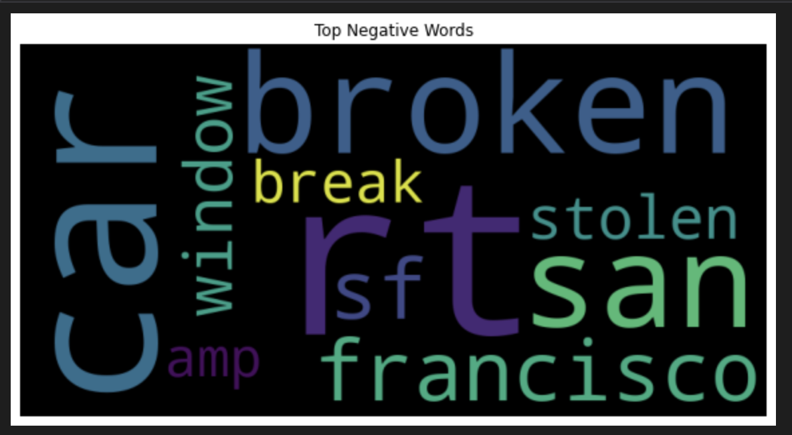
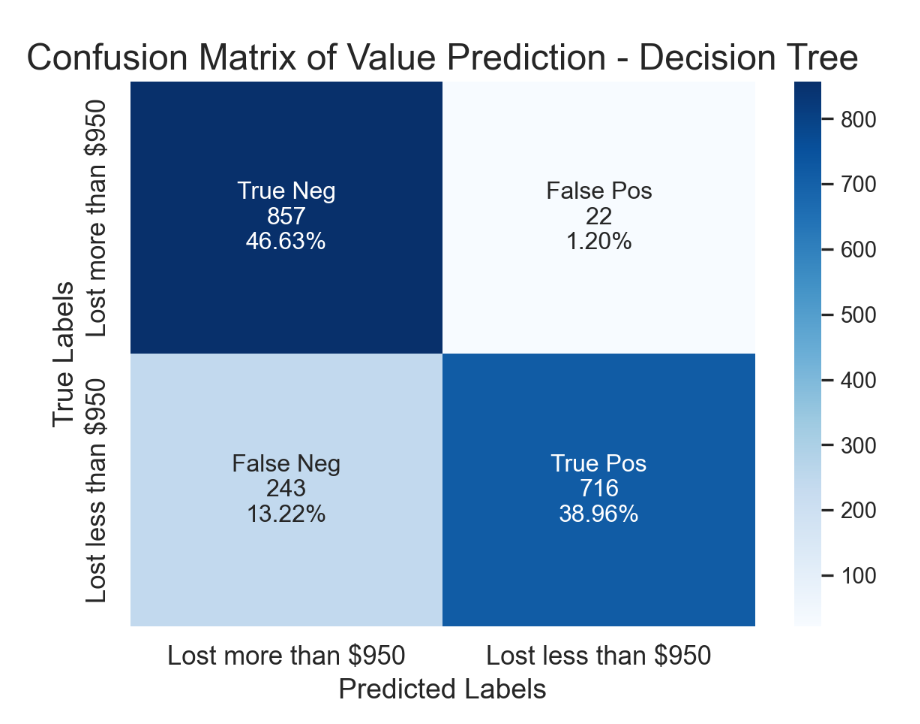

Final Project Conclusion
Conclusion
To summarize the entire project, the intial goals of this project was to analysis 1. What contribute to the car breakin in San Francisco? 2. How twitter is using as a platform reporting Car break-in crimes in San Francisco? And trying to explor many other data science question along the progress. However, when collecting data for the porject, the complexity and difficlutity of this project exceed my previous expectations. I ending up with two major data sources, twitter API pulling tweets related to “SF car breakins” and San Francisci Police Department crime report database. The car break-ins are filtered out from the SFPD database and group by years, also created new variables like the value of good lost in the incident to serve as target variables for the supervised learning, where the tweets are cleaned up and labeled manullay to searve as a useful dataset.
After a throughly clean up, the initial exploratory data analysis (EDA) was already able to generate some interesting information that correspond with my primary assumption of the factor that contribute to the incidents and number of car break-ins in San Francisco. TO gather the data, I used twitter api to collecting tweets by key words such as “car”, “break”, “window”, etc, then during the eda processes, I vectorized the data and analyzed the tweets by Sentiment Intensity, which the top ten negative words endedup be, “broken”, “break”, “San Francisco” ,etc. Thus from the begining the EDA was able to identified the key for this research.

Throughout the semeester, as we getting a deeper knowledge of the data science world, the project winding down to become a complex research using all kind of algothrim, both supervised and unsupervised learning, to explore the SF car break-in data collected from twitter and SFPD databse. Frist model I tested on the datasets is Naive-bayes, which I used python to test whether a the model is able to clearly identitfy the true crime reports and used R to tested on the variables that effect the value of good lost in each incident. For twitter crime report detection, we could see that naive bayes perform expectionally when predicting the labels with more data fed into the model. And overall the model based on key words and texts is more practical compared to the classification features by police districs and others desipte a slightly lower accuracy. However, these classification feature, whether the car is locked or not, the crime is self reported compared to police report does provide an accurate predcition of the value lost.

I have also tested other supervised learning algorthms such as decision tree and SVM on the dataset. For decision tree, The overall accuracy for the model is greate, about 85%, however to inprove the model accuracy with this imbalanced dataset, we could probably perform a random forest experiment that keep resampling the data and construct multiple trees and vote on the majority result, or try other classification method. In comparesion, the SVM seems performing perfectly in the tweets vectorizatioin and preditions, however, it’s hard to make conclusion that SVM will be the perfect model since the dataset only include about 100 tweets and the model might be overfitting when dealing with the dataset. Compare to the Naive Bayes prediction on the similiar dataset, SVM still shows its adavantage compare to others like Naive Bayes.

The final touch for the project focus on unsupverized learning, clustering and ARM.
For Clustering, the twitter crime report(textual data), K-means clustering perfom the best and was able to generate the prediction of the tweets with label relatively clost to the actualy labels of each dataset. This conclusion might not be inclusive since for textual data after vectorization, the dimension of the matrix could played an effected in the model’s performance of clustering each tweets. DBSCAN and Agglomerative/Hierarchical clustering both are useful clustering method when targeting specific distribution of the dataset and their focus of relationships between each dataset is also different.
The ARM tab is also interesting that new findings like the strong correlation between certain sets of words that support and echo with previous findings in EDAs and regression anaylsis. ARM is a useful method to figure out the relationship between each variables. This tab also demonstrate that the application of the ARM is not limited to the typical transcation data but as well as NLP, Image analysis, Click streams, Bio data- binding sites, etc